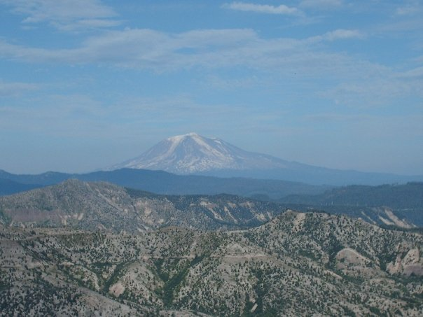

This is the view of Mount St. Helens near the top. I remember the feeling as I was standing there. It was awe-inspiring, majestic. I can see why some people worshiped mountains.
This is a shot of the "Blown Down Forest." Some people call it that because there was a forest when the moutain erupted. A lot of the trees are still laying down. You can see the direction of the blast by the way they're laying down.
My friend must have done a lot of studying on Mount St. Helens. She told me that after after the blast a huge mat of trees, dirt and vegetation covered Spirit Lake. For a long time there was no life in the water. The mat has gotten much smaller since the blast but you can still see some of it.
Most of Spirit Lake is now clear of the log mat and aquatic life has returned.

This is a panoramic view of Mount St. Helens